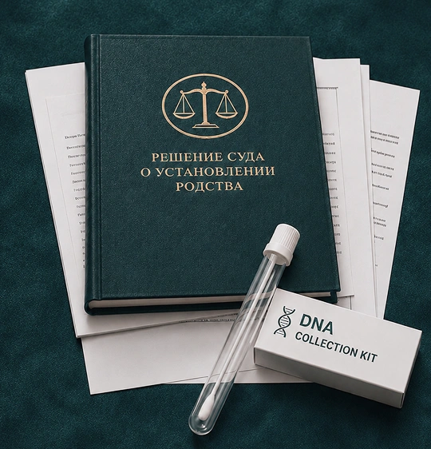

Определяем:
- действительно ли необходимо судебное установление родства;
- какую именно связь требуется подтвердить;
- для какой процедуры МВД это необходимо;
- нельзя ли решить вопрос документами без генетической экспертизы.



Генетическая экспертиза для установления семейной связи проводится на основании постановления суда по семейным делам либо, в предусмотренных законом случаях, религиозного суда.
Поэтому сначала определяется юридическая задача и подаётся соответствующее обращение в суд — а не выбирается лаборатория.

После постановления суда образцы берутся с идентификацией участников в лаборатории, аккредитованной Министерством здравоохранения.
Если один из участников находится за пределами Израиля, процедура может включать израильское дипломатическое или консульское представительство.
Результат генетической экспертизы не предназначен для самостоятельной подачи клиентом в МВД.
Заключение направляется суду, который рассматривает его и принимает решение об установлении отцовства, материнства или другой семейной связи. Именно судебное решение затем используется в соответствующей процедуре МВД.
| Ошибочное представление | Как устроено юридически |
|---|---|
|
«Сдам ДНК и принесу результат в МВД»
|
Сначала необходимо пройти судебную процедуру
|
|
«Главное выбрать правильную лабораторию»
|
Экспертиза проводится после постановления суда и в установленном порядке
|
|
«Результат теста выдадут мне»
|
Заключение получает суд; для дальнейшей процедуры используется судебное решение
|
Это один из наиболее конкретных сценариев.
Важно понять:
Если у вас есть письменный запрос МВД — пришлите его при обращении.
Физическое нахождение родителя, ребёнка или другого участника в другой стране само по себе не исключает проведение процедуры.
После вынесения судебного постановления забор образцов за рубежом может организовываться через израильское дипломатическое или консульское представительство.
Конкретный порядок зависит от:
Например, отец является гражданином Израиля, ребёнок находится в Израиле или за рубежом, но необходимого документального подтверждения отцовства нет либо оно вызывает юридические вопросы.
В такой ситуации может потребоваться установление отцовства через суд и генетическая экспертиза в рамках дела. Аналогичный вопрос может возникать при необходимости установить материнство.
В более сложных случаях речь может идти о биологическом родстве между братьями, сёстрами или другими родственниками.
Здесь особенно важно сначала определить, какую именно связь необходимо доказать и можно ли установить её генетически с достаточной достоверностью.
Не всякая задача требует экспертизы и не всякая родственная связь доказывается одинаковым способом.

Определяем:
Если установление родства необходимо, готовится заявление в суд по семейным делам.
В заявлении важно корректно определить:
Суд рассматривает материалы и решает вопрос о назначении генетической экспертизы.
В делах, затрагивающих детей и личный статус, могут применяться дополнительные процессуальные требования.
После постановления суда организуется забор образцов в установленном порядке.
Если участники находятся в разных странах, в процедуру может включаться израильское дипломатическое или консульское представительство.
Заключение лаборатории направляется непосредственно суду.
Суд рассматривает заключение экспертизы и другие материалы дела и принимает решение.
Если родство установлено, судебное решение используется далее в соответствующей процедуре МВД.
Практическая задача адвоката — правильно определить юридическую цель, стороны дела и доказательства, провести судебную стадию и связать полученное решение с конкретной процедурой МВД.
Мы не гарантируем вынесение постановления суда, результат экспертизы или решение МВД. Эти решения принимают соответствующие органы.


Необходимо было установить отцовство для дальнейшей статусной процедуры ребёнка.
Оценили имеющиеся документы, определили юридическую задачу и выстроили судебную процедуру с учётом нахождения участников в разных странах.
После завершения судебной стадии решение об установлении родства могло быть использовано в соответствующей процедуре МВД.
Частный тест был проведён до начала юридической процедуры.
Разобрали, почему такой результат сам по себе не заменяет судебного установления родства, и определили необходимый дальнейший порядок действий.
Клиент получил письменный запрос в рамках иммиграционного дела.
Изучили требование, определили, какую именно семейную связь необходимо подтвердить, и выстроили дальнейшие действия под конкретную процедуру.


Да. Ступенчатая процедура МВД распространяется как на официально зарегистрированных супругов, так и на пары, состоящие в гражданском браке (ידועים בציבור). Важно документально подтвердить реальность отношений и совместного проживания. Конкретный маршрут зависит от вашей ситуации — уточните при первом обращении.
Нет, это принципиально разные вещи. ДНК-тест в иммиграционном контексте используется исключительно для подтверждения биологического родства — например, отцовства или связи с гражданином Израиля. Он не доказывает принадлежность к еврейскому народу и не является основанием для репатриации сам по себе. Кроме того, для МВД нужен юридически оформленный тест — обычный медицинский анализ не подойдёт.
Стоимость зависит от вида и сложности дела. После первичного разбора ситуации мы объясняем условия сопровождения, что именно входит в работу офиса и какие этапы предстоят. Напишите нам — расскажем подробнее применительно к вашему случаю.
Нет. Мы работаем с клиентами по всему Израилю. Консультации проводим онлайн или в офисе. В отдельных случаях возможен выезд к клиенту — формат согласуется индивидуально при первом обращении.
Стараемся ответить в день обращения. У каждого клиента есть общий WhatsApp-чат с командой офиса — это значит, что ваш вопрос не зависит от того, занят ли один конкретный сотрудник. В праздничные дни время ответа может увеличиться — мы предупреждаем об этом заранее.
Адвокат Михаэль Коберг зарегистрирован в Коллегии адвокатов Израиля. Вы можете проверить его лицензию в официальном реестре — ссылка на профиль есть на странице команды. У нас официальный сайт, реальный офис и возможность очной встречи до принятия какого-либо решения.